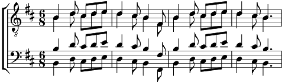

1. Sont des hommes de grand courage,
Ceux qui partiront avec nous
Ils ne craindront point les coups
Ni les naufrages,
Ni l'abordage
Du péril seront jaloux
Tous ceux qui partiront avec nous.
2. Ce seront de hardis pilotes,
Les gars que nous embarquerons.
Fins gabiers et francs lurons
Je t'escamotte
Toute une flotte
Bras solide et coup d'œil prompt
Tous les gars que nous embarquerons.
3. Ils seront de fiers camarades,
Ceux qui navigueront à bord,
Faisant feu babord, tribord,
Dans la tornade
Des canonades
Vainqueurs rentreront au port
Tous ceux qui navigueront à bord.
4. Et des prises de tous tonnages
Nous ramènerons avec nous.
Et la gloire et les gros sous
Feront voyage
Dans nos sillages.
Vent arrière ou vent debout
Nous les ramènerons avec nous.
5. Car c'est le plus vaillant corsaire
Qui donna l'ordre du départ.
Vite en mer et sans retard,
Faisons la guerre
À l'Angleterre.
Car c'est le fameux Jean Bart
Qui nous commandera le départ.